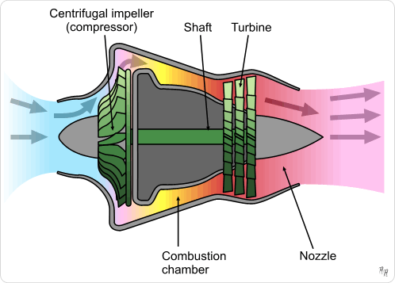

Proudový motor
Proudový motor je typ spojovacího motoru, který využívá proudění plynů k vytváření tahu. Proudové motory jsou známé svou vysokou účinností a schopností dosahovat vysokých rychlostí.
Tento typ motoru se často používá v letadlech a lodích.
